I have an unyielding drive for self-improvement.
~個人基本資訊~
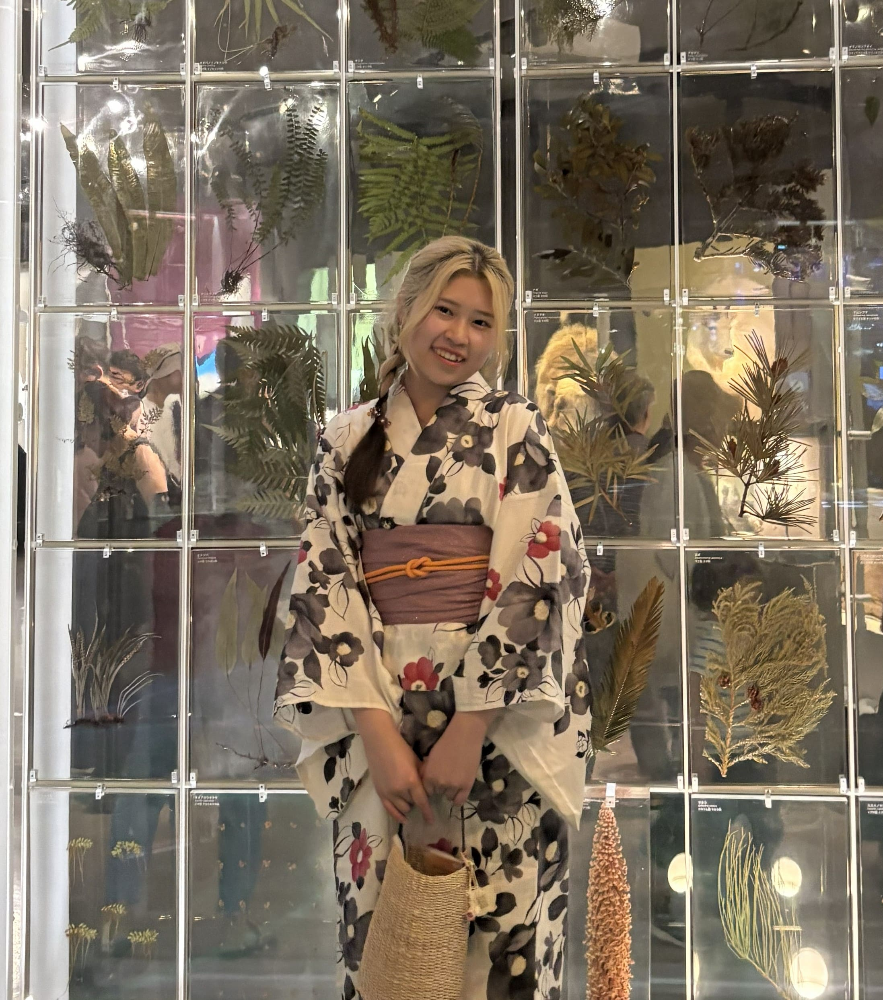
若松花音-Kanon Wakamatsu
中原大學－資訊管理系 2005.12.13
個性：我的個性穩定、認真，做事有耐心。面對新環境時能快速適應，也會主動完成需要做的事。此外，我喜歡與人互動， 善於理解他人的情緒與需求，樂於提供幫助與支持，並常能激勵周圍的人一起達成目標。
優點：做事有責任感，習慣把任務確實完成。遇到問題時會冷靜思考，找到可行的解決方法。在團隊合作中，我會注意傾聽與溝通。
缺點：有時候會花太多時間確認細節，希望把事情做到最好。現在也在學習更有效率地分配時間，但我相信這樣的仔細也能帶來更高品質的成果。
興趣：喜歡整理資料、規劃行程，也喜歡學語言、拍照和記錄生活。保持好奇心、持續提升自己。此外，我喜歡唱歌，希望大家有機會能聽我唱歌。
個性：我的個性穩定、認真，做事有耐心。面對新環境時能快速適應，也會主動完成需要做的事。此外，我喜歡與人互動， 善於理解他人的情緒與需求，樂於提供幫助與支持，並常能激勵周圍的人一起達成目標。
優點：做事有責任感，習慣把任務確實完成。遇到問題時會冷靜思考，找到可行的解決方法。在團隊合作中，我會注意傾聽與溝通。
缺點：有時候會花太多時間確認細節，希望把事情做到最好。現在也在學習更有效率地分配時間，但我相信這樣的仔細也能帶來更高品質的成果。
興趣：喜歡整理資料、規劃行程，也喜歡學語言、拍照和記錄生活。保持好奇心、持續提升自己。此外，我喜歡唱歌，希望大家有機會能聽我唱歌。
~聯絡資訊~
~個人專業與技能~
Python
從2024年8月開始學習。已熟悉基本語法、資料型態、條件判斷與迴圈， 能寫簡單自動化程式和資料處理程式。也在嘗試使用套件做資料分析和小型專案。
Java
63%
從2025年2月開始學習。了解物件導向基本概念，能使用類別、繼承和方法寫程式， 並做簡單控制台應用程式練習，加強實作經驗。
HTML
75%
從2025年9月開始學習。掌握網頁基本結構與標籤使用方法，可以自己建立簡單網頁， 目前學習分區、表單、連結等進階功能。
CSS
70%
從2025年10月開始學習CSS。可以控制文字與背景樣式、盒模型、Flexbox/Grid排版， 並練習響應式設計與簡單動畫效果。
~個人經歷~
2022.11
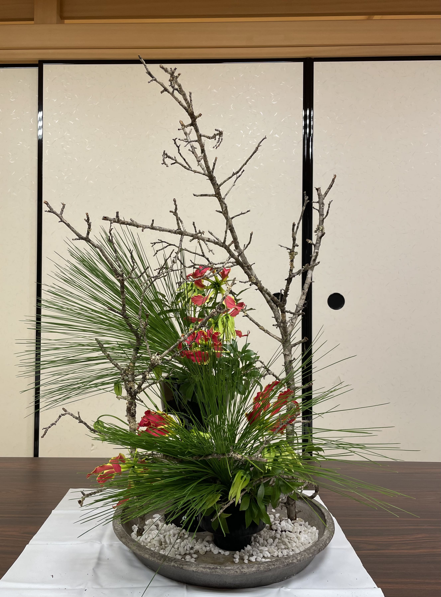 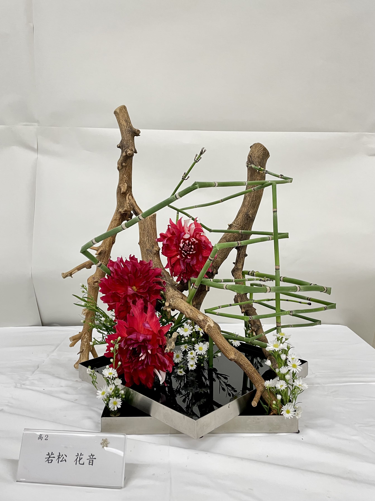 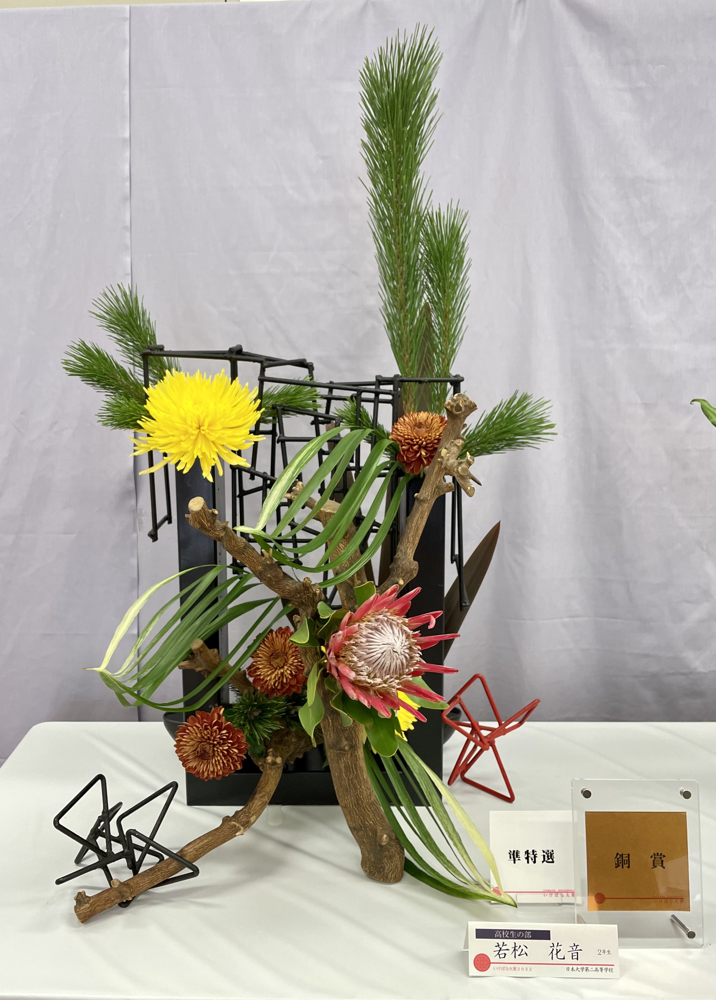
華道全國大會銅賞獲獎-社團活動
請按看作品 我擅長插花，畢業前，我參加全國插花比賽五次，國中時獲得了第一名，高中時獲得了第三名。 我兩年都擔任隊長。一開始我很擔心，但是老師和學妹們相信我。校慶時，很多人看我的作品，我很高興收到讚美。 這些經驗讓我學會了如何面對挑戰，並且在壓力下保持冷靜。我學會了如何規劃時間，安排每一次練習和比賽的準備， 並且理解了團隊合作的重要性。在帶領隊伍的過程中，我學會了傾聽隊員的想法，給予支持和鼓勵，讓大家可以發揮最好的表現。 除了技巧上的進步，我也培養了耐心和細心，懂得關注每一個小細節，因為這些細節往往決定作品的成敗。 我相信這些經驗不僅提升了我的插花能力，也讓我在面對生活和學習上的各種挑戰時更加自信和有條理。
2023.3
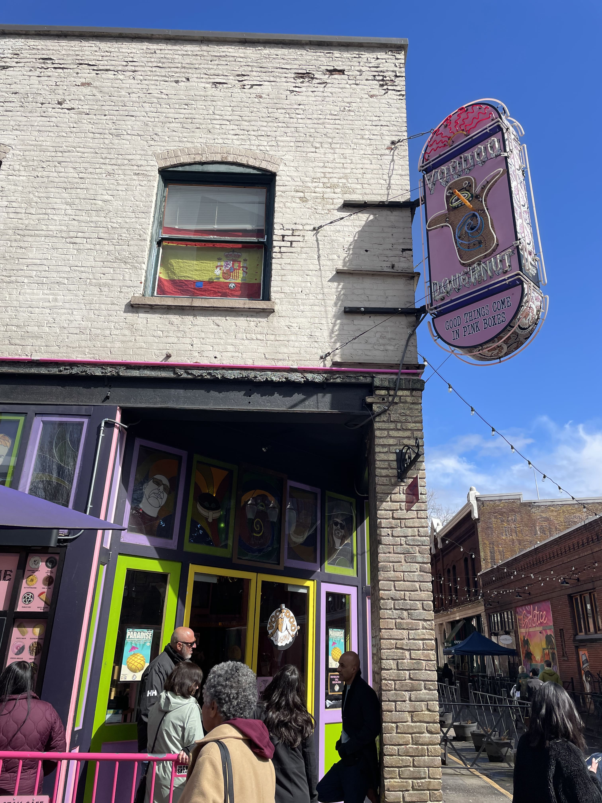
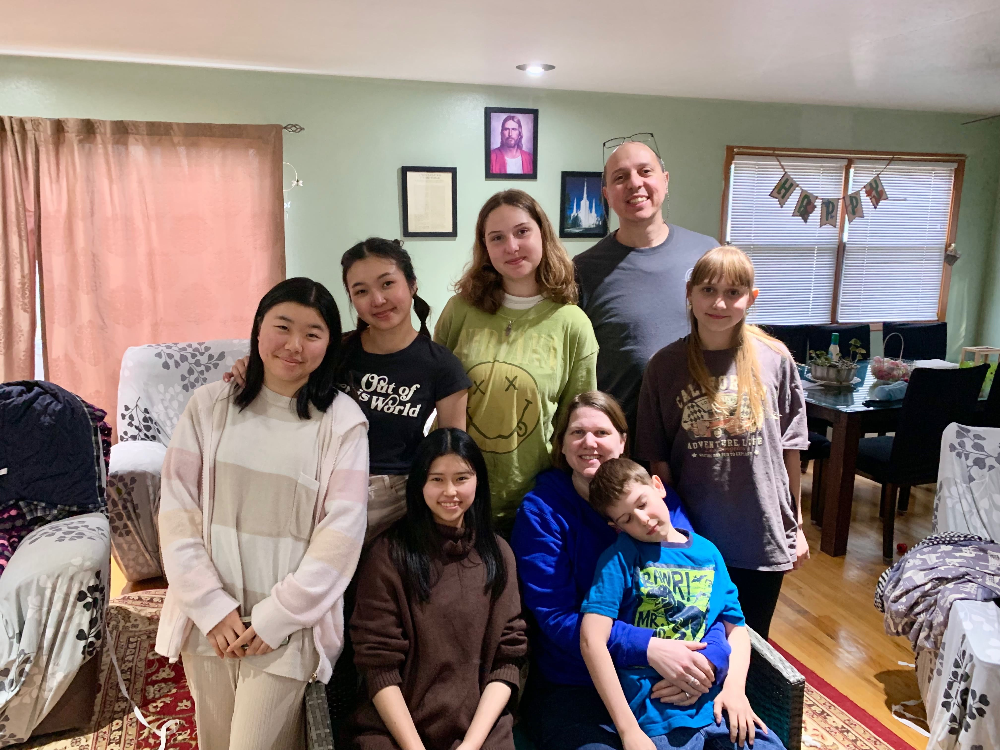

美國短期研修-國際交流
春假期間，我前往美國奧克蘭進行為期10天的短期海外研修。在當地的高中與高中生一起上課學習，假日時參加志願活動或前往教會， 累積了各種寶貴的經驗。這段經歷讓我學會了如何適應新環境和不同文化，也提升了我的溝通能力。在課堂上，我需要用英文與同學討論和完成小組作業， 這讓我學會了如何清楚表達自己的想法，同時也學會了傾聽別人的意見。在參加志願活動時，我學會了關心他人， 理解不同背景的人有不同的需求，這讓我培養了同理心和耐心。面對陌生環境，我必須自己安排時間、照顧生活起居， 這讓我變得更加獨立和有責任感。這次研修不僅讓我增進了語言能力，更讓我明白了計畫、合作和自我管理的重要性。 我相信這些經驗可以幫助我在未來的工作中，更有效地與同事合作、解決問題，並且持續成長，面對各種挑戰時更加自信。
2024.9
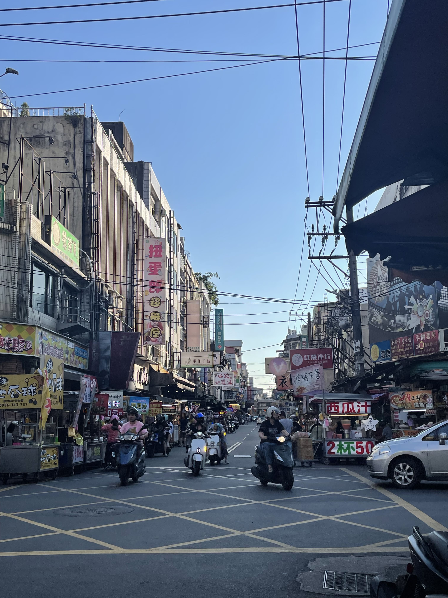
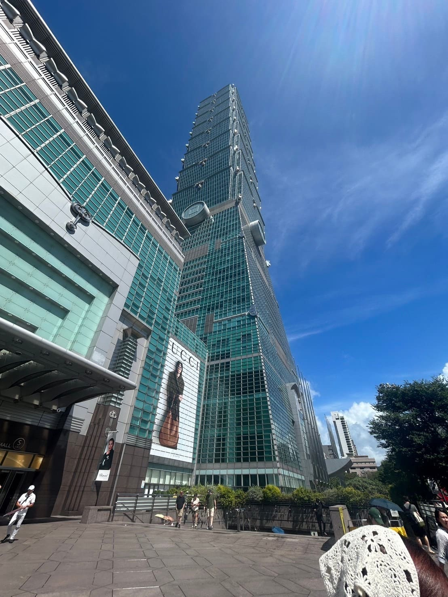
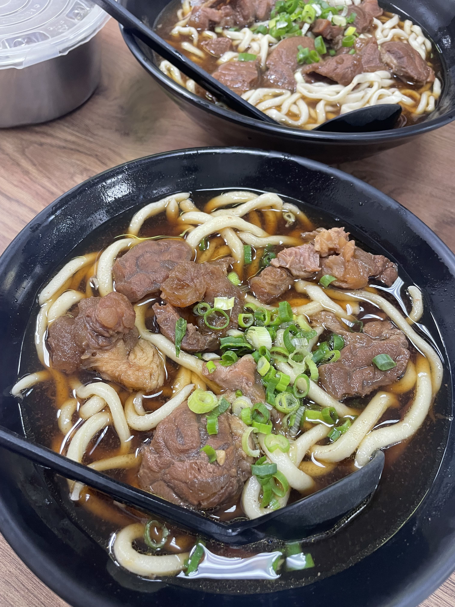
『前往台灣的大學讀書』
我去了國外讀大學，選擇了台灣的學校。因為我想體驗不同的事物，學習外國文化，並發展自己的可能性。進入大學以後，我非常努力學習中文。
剛到臺灣的時候，我每天都感到緊張和疲憊。上課時，常常聽不懂老師說的內容大半，周圍的同學看起來都很自在快樂，只有我覺得自己有點孤單。
但是有一天，我突然意識到，我來臺灣是為了努力學習和成長，可是我一直在害怕，根本沒有全力以赴。以前我總以為，只要出國留學，自然就會變得會說中文，也會變得更堅強。可是，面對孤獨和不安的時候，我才明白，
真正的成長不是環境給的，而是靠自己努力實現的。從那之後，我不再把「中文不好」當作藉口。
我開始參加學校的各種活動，積極創造使用中文的機會。雖然一開始常常犯錯，但慢慢地，我發現自己越來越有自信，也不再害怕與人互動。
這種勇於嘗試和適應新環境的能力，也讓我更有信心面對未來的職場挑戰。
2025.2
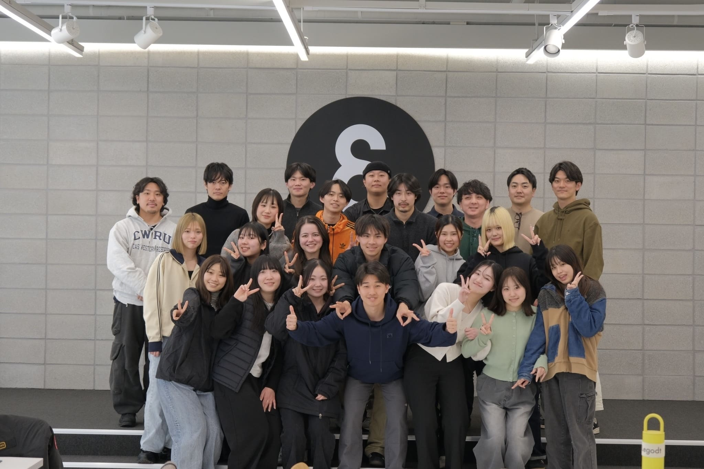
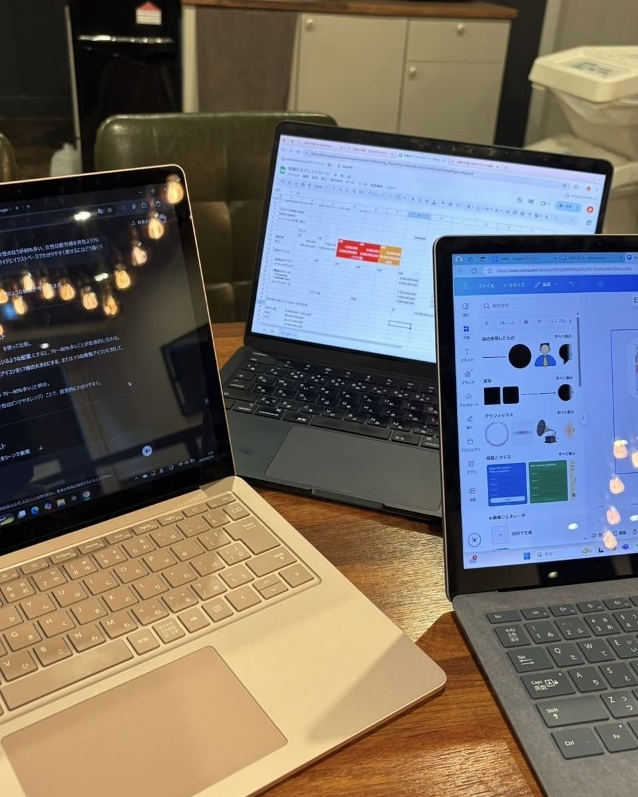
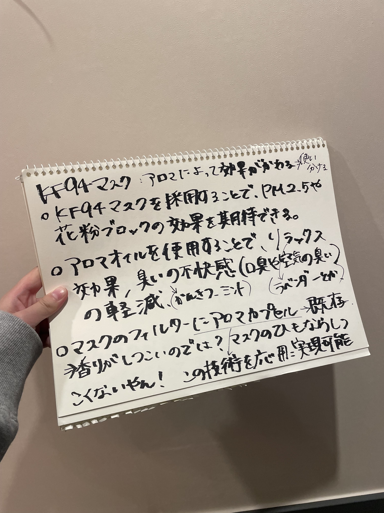
『短期海外實習』
我曾參加海外實習計畫「FullAsia」，在為期五天的活動中，學習了有關新事業開發的知識。活動地點在韓國，我一方面了解當地市場的特性，一方面針對社會課題提出專案建議。
在實地調查的過程中，我與當地的韓國人進行了超過六十份問卷訪談，收集他們的真實意見與需求，並根據這些第一手資料，討論和規劃專案的發展方向。這個過程讓我體會到，
理論知識與現場實踐之間存在著差距，而如何快速分析、整合資訊並提出可行方案，是我在這次經驗中最大的學習。此外，與來自不同文化背景的人一起工作，
也讓我對自己有了更深刻的認識。面對語言障礙與文化差異，我必須勇於表達自己的想法，並同時尊重和理解他人的觀點。這種跨文化溝通的經驗，不僅提升了我的人際互動能力，
也讓我學會在不熟悉的環境中保持靈活與適應力。透過這次海外實習，我發現自我成長不只是累積知識，更在於勇於踏出舒適圈、主動挑戰新事物，以及學會從不同角度觀察問題。
2025.3
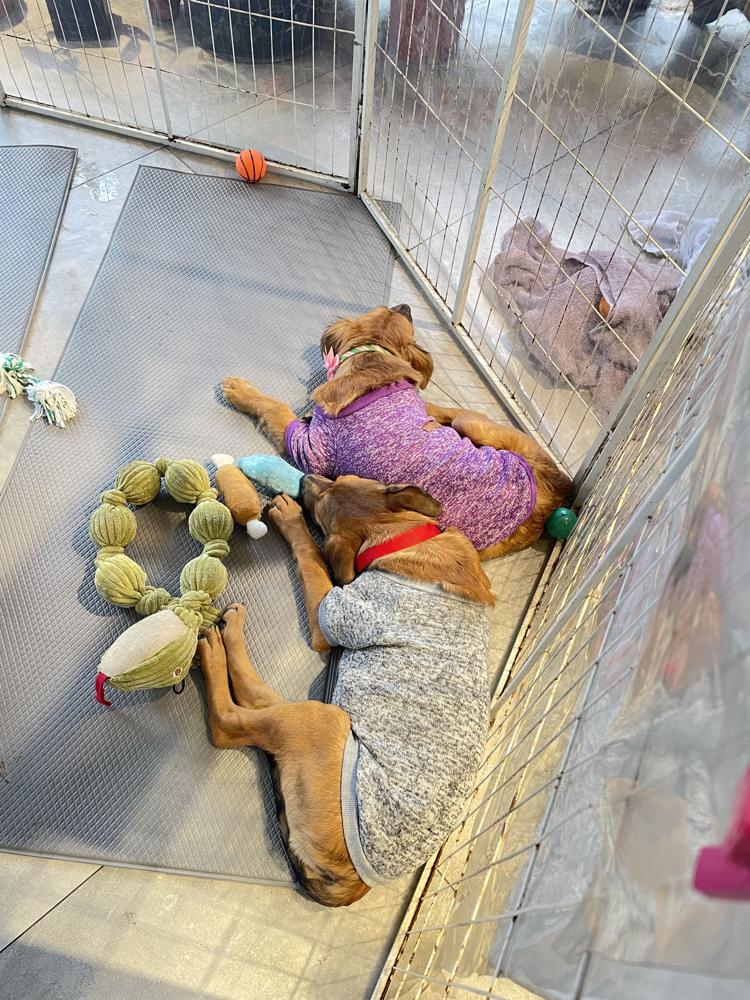
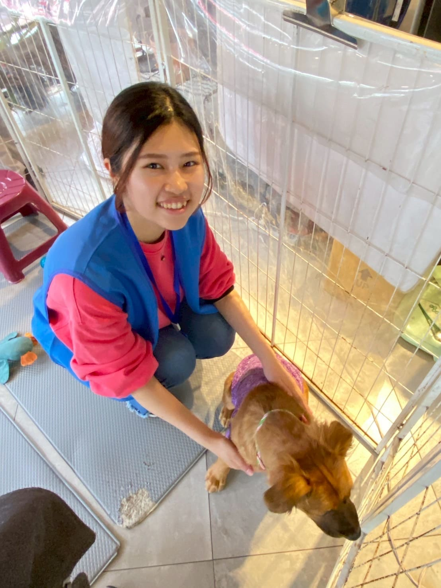
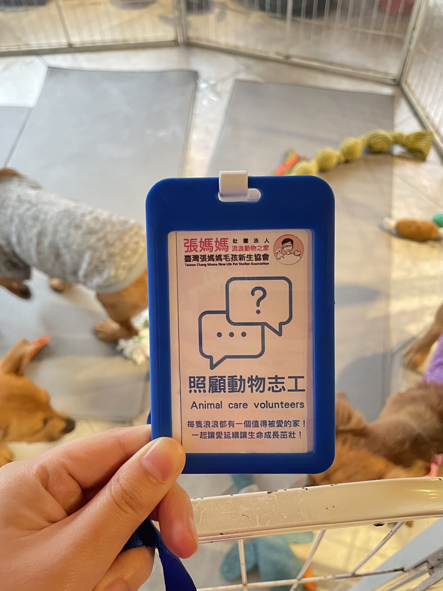
汪汪隊立大功-課程活動
在社團法人張媽媽流浪動物家擔任志工的一天，對我來說是非常特別的成長體驗。那天，我第一次近距離照顧流浪狗，學會觀察牠們的情緒和需求，並嘗試建立信任。 面對一些性格緊張或害怕人的野良狗，我一開始有些手足無措，也擔心自己的能力不足。但在志工的指導下，我慢慢學會如何耐心引導牠們吃飯、散步，以及安全地互動。這個過程讓我體會到耐心和細心的重要， 也明白了照顧生命需要負責任的態度。除了照顧狗，我還向來訪的客人介紹每一隻狗的個性和習慣，教他們如何正確互動。這讓我學會如何清楚表達自己的想法，也提升了與他人溝通的能力。 雖然只是短短一天的經驗，但我從中學到勇敢面對挑戰、保持耐心，以及如何觀察與理解生命的需求。我明白，成長不一定來自長期經驗，有時候，一天的投入和反思，也足以帶來自信與能力的提升。